🎯 In these notes you will learn to
- explain what a simple machine is, and why it never reduces the total work;
- define load, effort and mechanical advantage (MA);
- explain the fixed pulley, the movable pulley and pulley systems with figures;
- derive MA = L/h for an inclined plane using work done;
- state the principle of the lever and identify Class I, II and III levers;
- answer the textbook questions and solve numericals on simple machines.
👀 How to read the figures
Red arrow = Effort (E) · Blue = Load (L) · Gold triangle / dot = Fulcrum (F) · Brown line = rope. Every arrow is also labelled with a letter, so the figures stay clear even in black-and-white photocopies. Tap any figure to zoom.
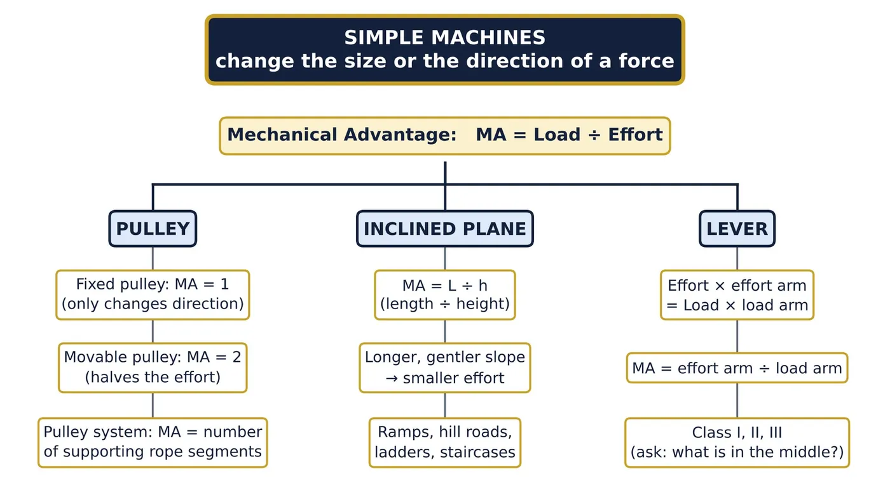
Simple machines: the big idea
Textbook: Chapter 7, Section 7.6
1.1 Why do we need machines?
In daily life we keep doing work against forces: drawing a bucket of water from a well, raising the national flag, loading a heavy drum onto a truck, opening the tight lid of a tin, or cutting cloth. Doing these jobs with bare hands may need a very large force, or a force in an awkward direction. Simple machines make such jobs easier.
Definition: simple machine
A simple machine is a device that makes a task easier by changing the magnitude (size) or the direction of the force that we apply.
In this chapter we study three simple machines: the pulley, the inclined plane and the lever.
1.2 How does a machine make a task easier?
Force multiplier
A small effort overcomes a large load. Examples: crowbar, ramp, movable pulley, wheelbarrow.
Changes the direction of force
We can apply the force in a more convenient direction. Example: a fixed pulley on a flagpole lets us pull DOWN to raise the flag UP.
Speed / distance multiplier
The load moves through a larger distance (or faster) than the effort. Examples: broom, fishing rod, our own forearm.
Convenience and safety
Fire tongs keep our fingers away from a hot coal; tweezers handle tiny objects.
1.3 Load, effort and mechanical advantage
- Load (L): the force that the machine has to overcome, usually the weight of the object being lifted, or a resistance such as the hardness of a nut. SI unit: newton (N).
- Effort (E): the force that we apply on the machine. SI unit: newton (N).
- Mechanical advantage (MA): the ratio of the load to the effort.
What does the value of MA tell us?
| Value of MA | Meaning | Examples |
|---|---|---|
| MA > 1 | Effort is less than the load: the machine multiplies force | Crowbar, ramp, wheelbarrow, movable pulley |
| MA = 1 | Effort equals the load: the machine only changes the direction | Fixed pulley, beam balance |
| MA < 1 | Effort is more than the load: we gain speed, distance or convenience | Fire tongs, broom, fishing rod, forearm |
Quick check: an effort of 50 N lifts a load of 250 N. MA = 250 ÷ 50 = 5, so the machine makes the effort 5 times smaller than the load.
1.4 The golden rule: a machine never reduces the total work
Recall from the first part of this chapter that work = force × displacement (W = F × s). A machine changes the force, but in an ideal machine (no friction, weightless parts) the work we put in is equal to the work we get out:
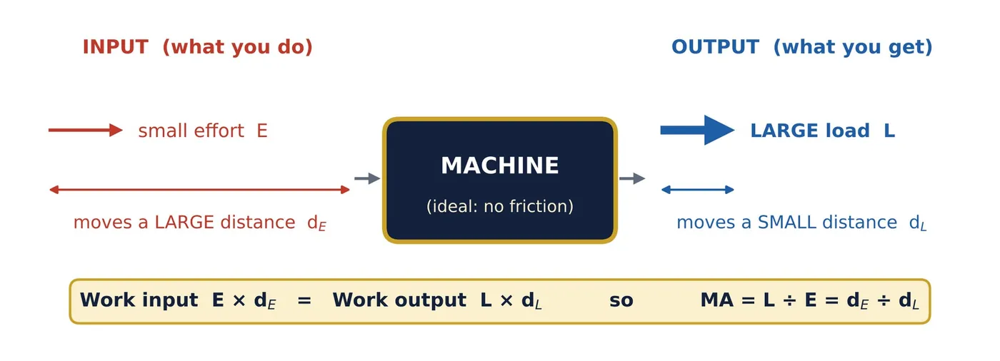
If a machine lets us use one-fourth of the force, we must move the effort four times as far. In short: what we gain in force, we lose in distance.
Example 1: checking the golden rule
An ideal machine of MA = 4 lifts a load of 400 N through 0.5 m.
Effort = Load ÷ MA = 400 ÷ 4 = 100 N. Distance moved by effort = 4 × 0.5 = 2 m.
Work input = 100 N × 2 m = 200 J; work output = 400 N × 0.5 m = 200 J. Equal: no work is saved.
⭐ Exam tip
A machine is a convenience, not a source of energy. It can reduce the force or change its direction, but it can never reduce the total work or create energy.
The pulley
Textbook: Section 7.6.1
2.1 What is a pulley?
A pulley is a wheel with a groove along its rim, which can turn freely about an axle passing through its centre. A rope (or string) runs in the groove. In an ideal pulley (no friction and a light rope) the tension T is the same all along the rope.
Pulleys are of two basic types, depending on whether the axle stays in place or moves along with the load (Figures 3 and 4).
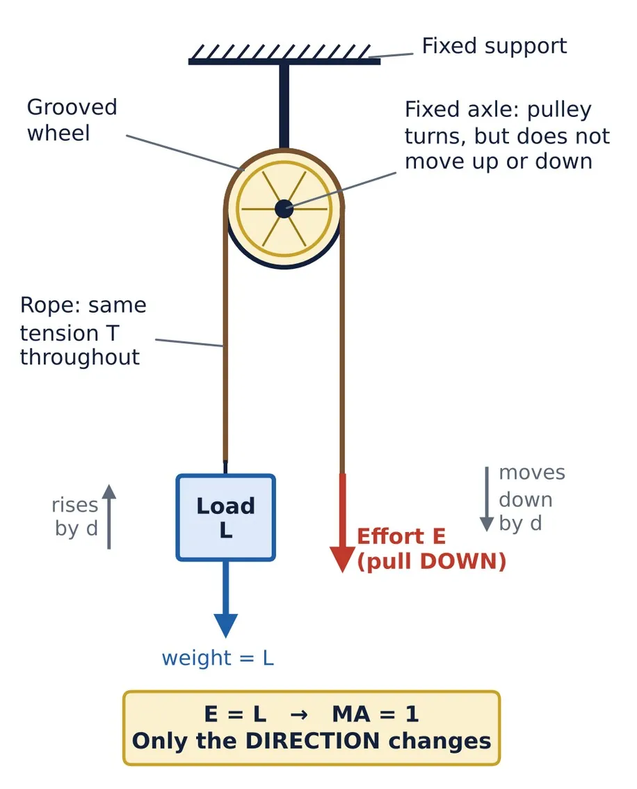
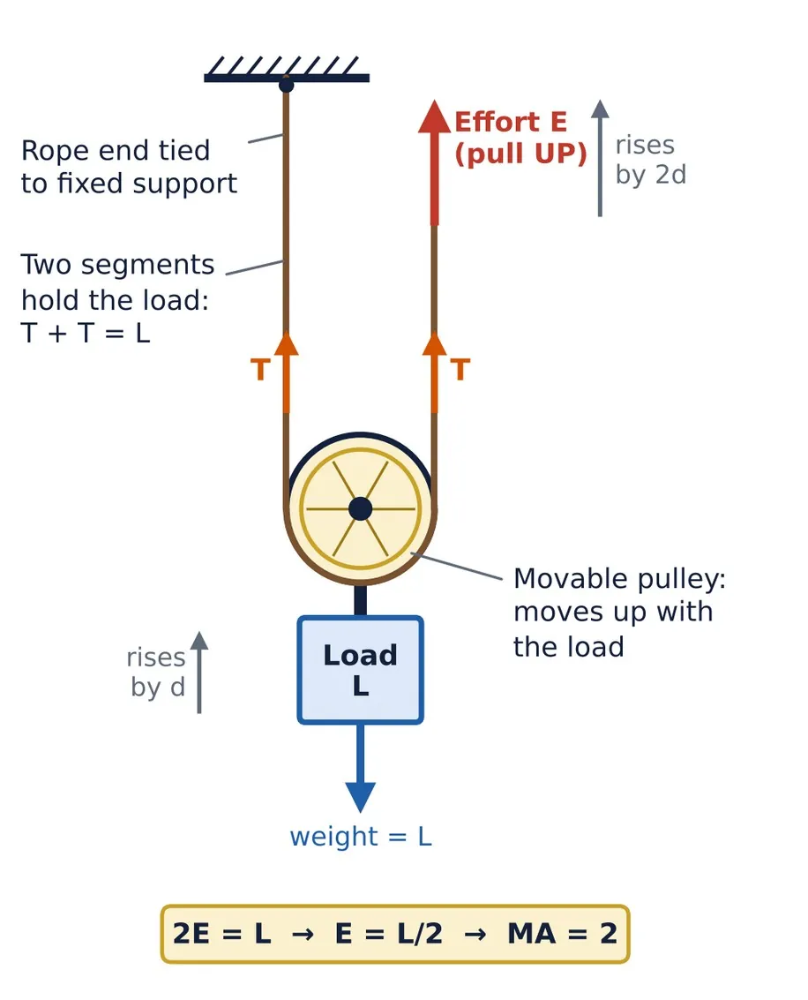
2.2 Single fixed pulley (Figure 3)
- The axle is fixed to a rigid support (a beam, the ceiling or the top of a flagpole). The pulley only turns; it does not move up or down.
- The load hangs from one end of the rope; the effort is applied at the other end by pulling down.
- The same tension acts throughout the rope, so Effort = Load. Hence MA = L ÷ E = 1 (ideal).
- When the effort end is pulled down by a distance d, the load rises by the same distance d.
🤔 If its MA is only 1, why do we use it?
Because it changes the direction of the force to a more convenient one:
- Pulling down is easier than lifting up: we can use our own body weight.
- We can stand on the ground and raise a load to a great height: a flag to the top of a tall pole, a bucket from a deep well, bricks to the roof.
In a real fixed pulley, friction at the axle makes the effort slightly more than the load, so the actual MA is a little less than 1.
Uses: flagpole, drawing water from a well, lifting material at a construction site, window blinds and curtains; also as a part of cranes and lifts.
2.3 Single movable pulley (Figure 4)
- One end of the rope is tied to a fixed support. The rope passes under a pulley to which the load is attached, and the effort is applied at the free end by pulling up. The pulley moves up together with the load.
- The load is held up by two rope segments, each carrying a tension T = E. So 2E = L, which gives E = L/2 and MA = 2 (ideal).
- Trade-off: to raise the load by d, both segments must shorten by d, so the effort end moves up by 2d.
- Golden-rule check: E × 2d = (L/2) × 2d = L × d. Work in = work out.
- Drawback: the effort acts upward, which is inconvenient. In practice the effort must also lift the pulley itself and overcome friction, so the actual MA is a little less than 2.
📝 Note
A movable pulley, or a system of pulleys, always gives an MA greater than 1. The exact value MA = 2 for a single movable pulley is the ideal result derived above, useful for numericals and for higher classes.
2.4 Combination of pulleys (Figure 5)
In practice, pulleys are combined to get both advantages: a small effort and a convenient direction.
- Fixed + movable pulley (Fig. 5a): the movable pulley halves the effort (MA = 2) and the fixed pulley turns the effort downward.
- Block and tackle (Fig. 5b): an upper fixed block and a lower movable block joined by one continuous rope. For an ideal system: MA = number of rope segments supporting the movable block. With 4 supporting segments, MA = 4 and the effort moves 4 times as far as the load.
- Uses: cranes, lifts (elevators), lifting car engines in garages, loading ships at docks.
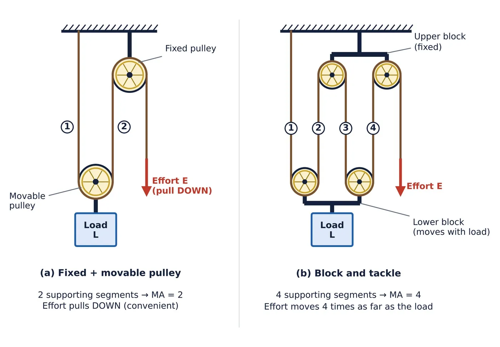
2.5 Fixed pulley vs movable pulley
| Feature | Single fixed pulley | Single movable pulley |
|---|---|---|
| Axle | Fixed to a support | Moves up and down with the load |
| Ideal MA | 1 | 2 |
| Direction of effort | Downward (convenient) | Upward (less convenient) |
| Distance moved by effort | Same as the load (d) | Twice the load (2d) |
| Main purpose | Changes the direction of force | Reduces the effort (force multiplier) |
| Common use | Flagpole, well, curtains | Part of cranes and pulley blocks |
2.6 Worked examples on pulleys
Example 2: same load, three pulley arrangements
A load of 600 N is to be raised through 1.5 m. Find the effort needed and the distance moved by the effort using (a) a single fixed pulley, (b) a single movable pulley, (c) a block and tackle with 4 supporting segments. Assume ideal pulleys.
| Arrangement | MA | Effort = L ÷ MA | Effort moves | Work by effort |
|---|---|---|---|---|
| (a) Fixed pulley | 1 | 600 N | 1.5 m | 600 × 1.5 = 900 J |
| (b) Movable pulley | 2 | 300 N | 3.0 m | 300 × 3.0 = 900 J |
| (c) Block and tackle | 4 | 150 N | 6.0 m | 150 × 6.0 = 900 J |
The effort becomes smaller, but the work done is 900 J (= 600 N × 1.5 m) every time.
Example 3: a real fixed pulley
A boy draws a bucket of water weighing 200 N out of a well using a fixed pulley. Because of friction he has to pull with 220 N. Find the actual MA.
MA = Load ÷ Effort = 200 ÷ 220 = 0.91
It is less than 1 because some effort is used up against friction.
📘 Textbook link: raising a flag (Revise, Reflect, Refine, Q7)
- The energy needed to raise a flag equals the work done to lift it, W = mgh: it depends on the mass of the flag (m), the height of the pole (h) and g.
- Raising it slowly or quickly does not change the work, because work depends only on force and displacement, not on time.
- Raising it twice as fast halves the time, so the power (P = W/t) doubles.
The inclined plane
Textbook: Section 7.6.2
3.1 What is an inclined plane?
An inclined plane is a flat surface tilted at an angle to the horizontal: a ramp or a sloping plank. Instead of lifting a heavy load straight up, we push or pull it along the slope to the same height.
3.2 Activity 7.3: how much force does a ramp need? (Figure 6)
You need: a smooth plank about 1.5 m long (stiff cardboard will do), a toy car or cart, a spring balance, and a stool or a pile of books about 0.5 m high.
- Lift the cart slowly and steadily, straight up, to the top of the books. The spring balance shows the full weight of the cart.
- Rest the plank against the books and pull the cart slowly up along it. The reading is smaller than in Step 1.
- Make the slope gentler (use a longer plank for the same height) and repeat. The reading becomes even smaller, but the cart must be pulled through a longer distance.
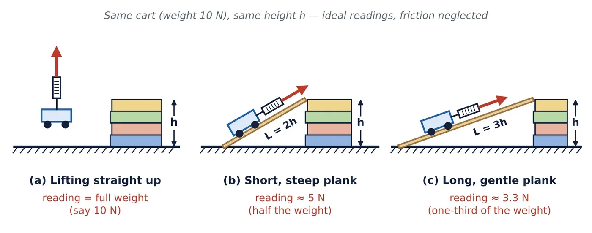
Conclusion of Activity 7.3
An inclined plane reduces the force needed to raise a load. The gentler (longer) the incline, the smaller the force, but the force has to act over a longer distance. Ignoring friction, the work done to reach the same height stays the same.
3.3 Mechanical advantage of an inclined plane (Figure 7)
Let a load of mass m (weight mg) be pulled up an incline of length L to a height h by an effort E acting along the slope.
- Work done by the effort along the incline = E × L
- Work needed to lift the load straight up = mg × h
- For an ideal (frictionless) incline, these are equal: E × L = mg × h
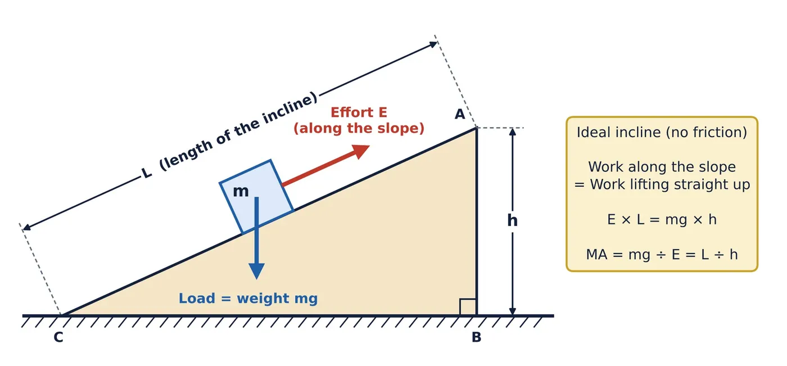
Points to note
- L is the length of the sloping surface, not the horizontal base.
- Since L is always greater than h, the MA of an inclined plane is always greater than 1.
- For the same height, a longer, gentler incline has a larger L/h, so it needs a smaller effort.
- A steeper incline has a smaller L/h and needs more effort. Lifting vertically means L = h, so MA = 1.
- In a real incline, friction makes the effort larger than mg × h ÷ L.
3.4 Worked examples on the inclined plane
Example 4: ramp over a step (textbook Example 7.12 type)
A ramp is used to push a box over a step 30 cm high. The ramp covers 40 cm of the floor. Find the mechanical advantage of the ramp.
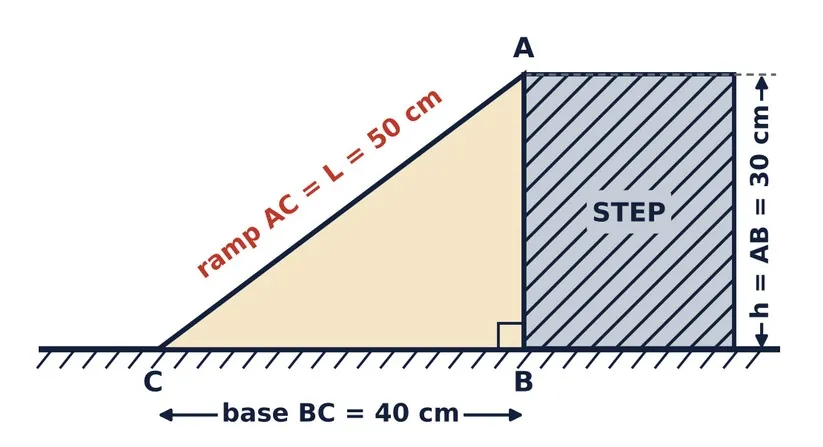
Given: h = AB = 30 cm; base BC = 40 cm.
Length of ramp (Pythagoras theorem): L = AC = √(30² + 40²) = √(900 + 1600) = √2500 = 50 cm
MA = L ÷ h = 50 ÷ 30 ≈ 1.67
Careful: use the sloping length AC (50 cm), not the base (40 cm).
Example 5: loading a drum onto a truck
A drum weighing 900 N is rolled up a plank 3 m long into a truck whose floor is 1 m above the road. Find the MA and the least effort needed (ignore friction).
MA = L ÷ h = 3 ÷ 1 = 3. Effort = Load ÷ MA = 900 ÷ 3 = 300 N.
Check: work along the plank = 300 N × 3 m = 900 J = work lifting straight up = 900 N × 1 m.
Example 6: shortest ramp that can be used
A worker can push with a force of at most 250 N. What is the shortest ramp he can use to push a 1000 N box onto a platform 0.8 m high? (Ignore friction.)
MA needed = Load ÷ Effort = 1000 ÷ 250 = 4. Since MA = L ÷ h, L = MA × h = 4 × 0.8 = 3.2 m.
So the ramp must be at least 3.2 m long.
3.5 Inclined planes around us (Figure 9)
- Winding roads on hills: a road going straight up a hill would be very steep, and vehicles would need a very large force. A road that winds around in gentle slopes is much longer (large L) for the same height h, so L/h is large and a much smaller force is enough. The work (mgh) is the same; it is just spread over a longer distance.
- Inclined vs vertical ladder: an inclined ladder acts like an inclined plane (L > h), so less force is needed at each step. On a vertical ladder (L = h) we must lift our whole weight straight up.
- Other examples: ramps for wheelchairs and trolleys, sloping planks for loading trucks, staircases, slides in parks, and escape ramps for trucks on highways.
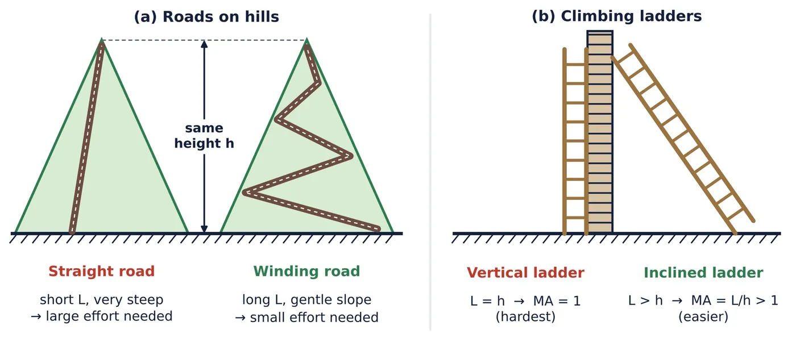
💡 Did you know?
A wedge (axe, knife, the tip of a nail) is two inclined planes joined back to back, and a screw is an inclined plane wrapped around a cylinder. They are not discussed separately in your textbook, but they work on the same principle.
The lever
Textbook: Section 7.6.3
4.1 Activity 7.4: lifting a heavy stapler with a light eraser (Figure 10)
Place a 30 cm scale over a pencil so that the pencil is close to one end. Put a stapler on the short side. On the long side place an eraser (add a second one if needed). The light eraser lifts the heavy stapler! The scale is working as a simple machine called a lever.
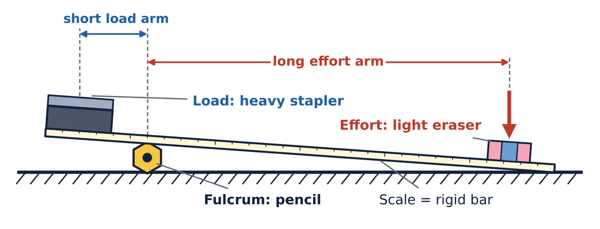
4.2 What is a lever? (Figure 11)
Definition: lever
A lever is a rigid bar that can rotate (turn) about a fixed point called the fulcrum.
- Fulcrum (F): the fixed point about which the lever turns (the pencil in Activity 7.4).
- Load (L): the force to be overcome (the weight of the stapler).
- Effort (E): the force applied (the weight of the eraser, or the push of our hand).
- Load arm: the distance of the load from the fulcrum.
- Effort arm: the distance of the effort from the fulcrum.
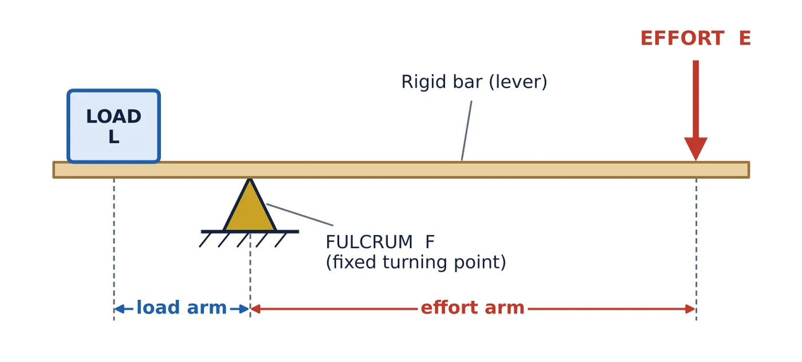
4.3 Activity 7.5: discovering the principle of the lever (Figure 12)
Hang a long scale (50 cm or more) from a string tied exactly at its middle; the string acts as the fulcrum. Hang a paper cup (pan) near each end and level the beam. Put 1 coin (effort) in the left pan at 20 cm from the fulcrum. Put 2, then 4, then 8 identical coins (load) in the right pan, and each time slide the right pan towards the centre until the beam is level again.
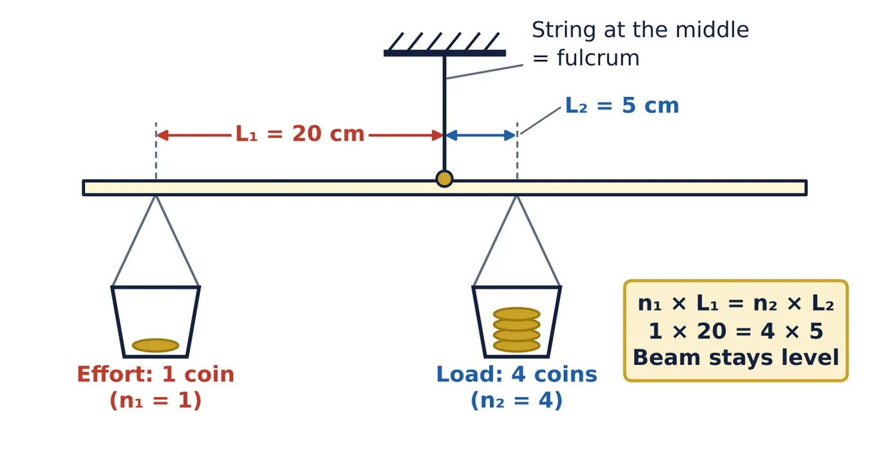
Table 7.1: sample readings
| Effort coins n1 | Effort distance L1 (cm) | Load coins n2 | Load distance L2 (cm) | n1 × L1 | n2 × L2 |
|---|---|---|---|---|---|
| 1 | 20 | 1 | 20 | 20 | 20 |
| 1 | 20 | 2 | 10 | 20 | 20 |
| 1 | 20 | 4 | 5 | 20 | 20 |
| 1 | 20 | 8 | 2.5 | 20 | 20 |
Observation: in every row, n1 × L1 = n2 × L2. A heavier load must sit closer to the fulcrum to balance the same effort.
4.4 Principle (law) of the lever
- A longer effort arm (or a shorter load arm) gives a larger MA: a smaller effort is needed.
- If the effort arm is doubled while the load arm stays the same, the MA doubles.
- Distances (arms) are always measured from the fulcrum, not from the end of the bar.
💡 Did you know?
The Greek scientist Archimedes understood levers so well that he is said to have claimed he could move the Earth itself, if only he had a long enough lever and a place to stand!
4.5 A lever also trades force for distance (Figure 13)
When a lever turns, the effort end moves along a bigger arc than the load end. If the effort arm is 3 times the load arm, the effort end moves 3 times as far as the load. So E × dE = L × dL: the work done is the same; the lever only exchanges force for distance.
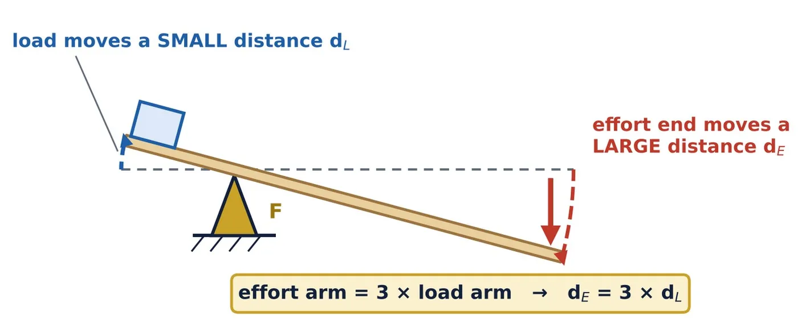
4.6 Worked examples on levers
Example 7: finding the effort
An ideal lever has an effort arm of 60 cm and a load arm of 20 cm. What effort will balance a load of 90 N? Find the MA.
E × 60 = 90 × 20 → E = 1800 ÷ 60 = 30 N. MA = 60 ÷ 20 = 3
(Check: 90 ÷ 30 = 3.)
Example 8: seesaw with four seats (textbook Example 7.13 type)
A seesaw has four seats A, B, D and E with the fulcrum at C. AC = EC = 2 m and BC = DC = 1 m. On which seats should children of masses 15 kg and 30 kg sit so that the seesaw balances?
Let the 15 kg child sit on seat A (2 m from C) and the 30 kg child sit at a distance x on the other side. Weight is proportional to mass (g cancels on both sides), so:
15 × 2 = 30 × x → x = 1 m
So the 15 kg child sits on A and the 30 kg child on D (or, by symmetry, on E and B). See Figure 14.
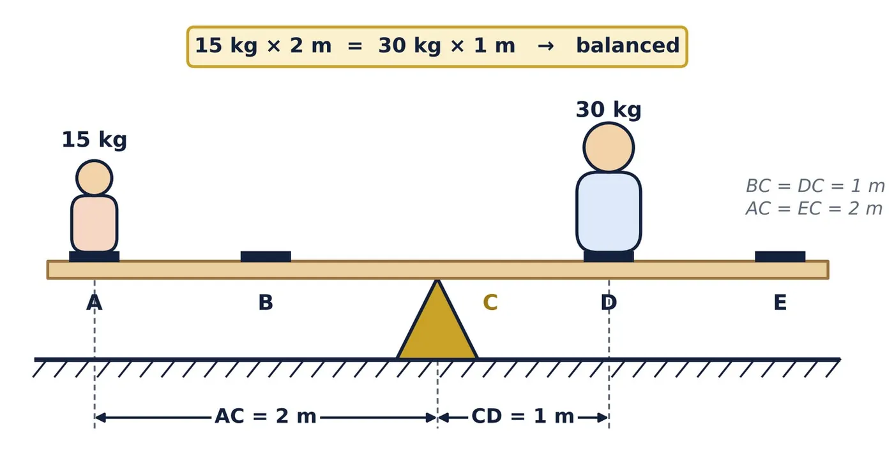
Example 9: adult and child on a seesaw (Revise, Reflect, Refine, Q9)
An adult who weighs twice as much as a child balances a seesaw with the child. Where do they sit?
Let the child’s weight be W and the adult’s weight 2W. W × dchild = 2W × dadult → dchild = 2 × dadult
The child sits twice as far from the fulcrum as the adult (e.g. child at 2 m, adult at 1 m).
Draw it like Figure 14.
Example 10: crowbar
A crowbar 1.5 m long is used to lift a stone weighing 600 N. The fulcrum is placed 0.3 m from the end under the stone. Find the effort needed at the other end and the MA.
Load arm = 0.3 m; effort arm = 1.5 − 0.3 = 1.2 m.
E × 1.2 = 600 × 0.3 → E = 180 ÷ 1.2 = 150 N. MA = 1.2 ÷ 0.3 = 4
Classes of levers
Levers are grouped into three classes according to the relative positions of the fulcrum (F), the load (L) and the effort (E). The easiest way to decide the class is to ask: what is in the middle?
🧠 Memory trick: F–L–E = 1–2–3
Fulcrum in the middle → Class I · Load in the middle → Class II · Effort in the middle → Class III
5.1 Class I lever: fulcrum in the middle (Figure 15)
- Order: Load, Fulcrum, Effort. The load and the effort act on opposite sides of the fulcrum.
- MA can be greater than 1, equal to 1 or less than 1, depending on whether the effort arm is longer than, equal to, or shorter than the load arm.
- Examples: seesaw, beam balance (MA = 1), scissors, pliers, crowbar, claw hammer pulling out a nail, handle of a hand pump, a spoon used to open a tin lid.
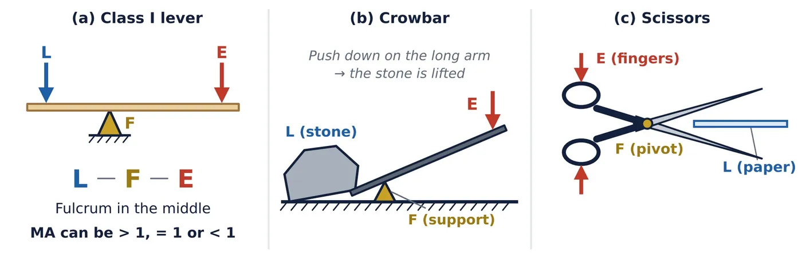
5.2 Class II lever: load in the middle (Figure 16)
- Order: Fulcrum, Load, Effort. The load and the effort are on the same side of the fulcrum.
- The effort arm is always longer than the load arm, so MA is always greater than 1: a Class II lever is always a force multiplier.
- Examples: wheelbarrow, nutcracker, lemon squeezer, bottle opener.
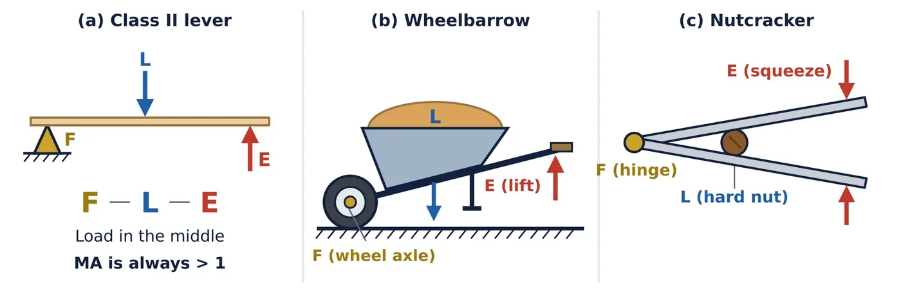
5.3 Class III lever: effort in the middle (Figure 17)
- Order: Fulcrum, Effort, Load.
- The effort arm is always shorter than the load arm, so MA is always less than 1: the effort is more than the load!
- Why use them? The load end moves through a larger distance, and faster, than the effort. They also give convenience, safety and fine control.
- Examples: fire tongs, tweezers (forceps), fishing rod, broom (while sweeping), human forearm.
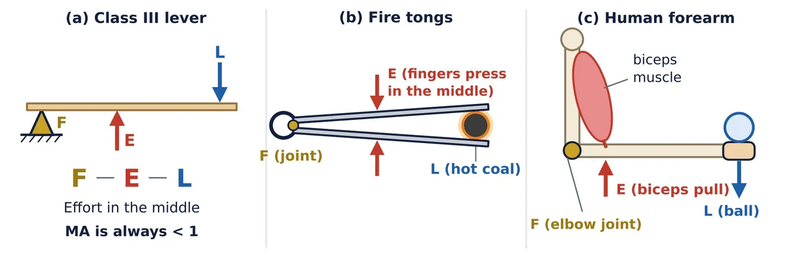
Example 11: our forearm is a Class III lever
The biceps muscle is attached about 4 cm from the elbow, and a ball of weight 20 N is held in the hand 32 cm from the elbow. Find the effort the biceps must apply and the MA.
E × 4 = 20 × 32 → E = 160 N. MA = 20 ÷ 160 = 0.125 (less than 1)
The muscle pulls 8 times harder than the weight of the ball, but the hand moves 8 times farther (and faster) than the point where the muscle pulls.
5.4 Comparing the three classes
| Feature | Class I | Class II | Class III |
|---|---|---|---|
| What is in the middle? | Fulcrum | Load | Effort |
| Order | L–F–E | F–L–E | F–E–L |
| Mechanical advantage | > 1, = 1 or < 1 | Always > 1 | Always < 1 |
| Main gain | Force or a convenient direction | Force | Speed, distance, convenience |
| Examples | Seesaw, scissors, pliers, crowbar, beam balance | Wheelbarrow, nutcracker, lemon squeezer, bottle opener | Fire tongs, tweezers, fishing rod, broom, forearm |
5.5 Levers in action
(a) Opening a tight tin lid with a spoon (Figure 18)
The spoon acts as a Class I lever. The rim of the tin is the fulcrum. The grip of the lid at the tip of the spoon is the load, very close to the fulcrum (short load arm). We push down at the far end of the spoon (long effort arm). Since MA = effort arm ÷ load arm is large, a small push easily lifts the lid.
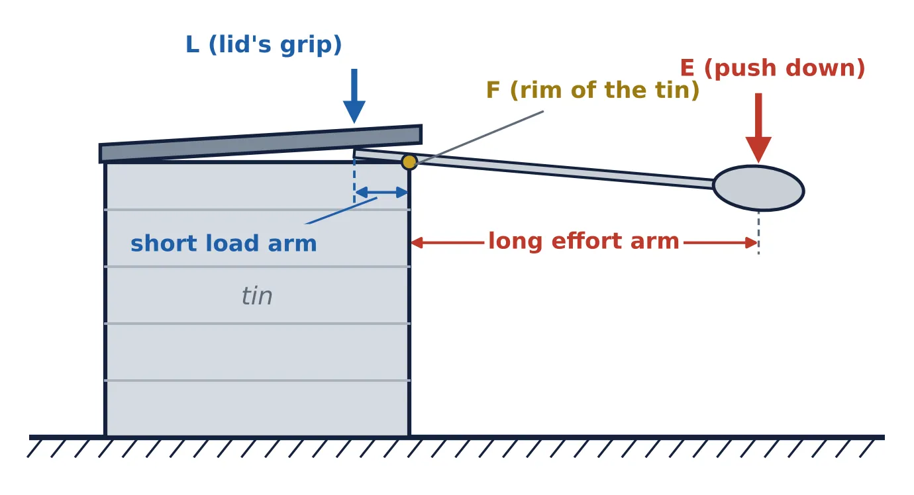
(b) Why do we cut hard things close to the hinge of scissors? (Figure 19)
Scissors are a Class I lever with the pivot as the fulcrum. From the principle of the lever, Effort × effort arm = Cutting force × load arm. For the same effort and effort arm, a shorter load arm gives a larger cutting force. So we push thick cardboard close to the pivot; near the tips the load arm is long and the cutting force is small.
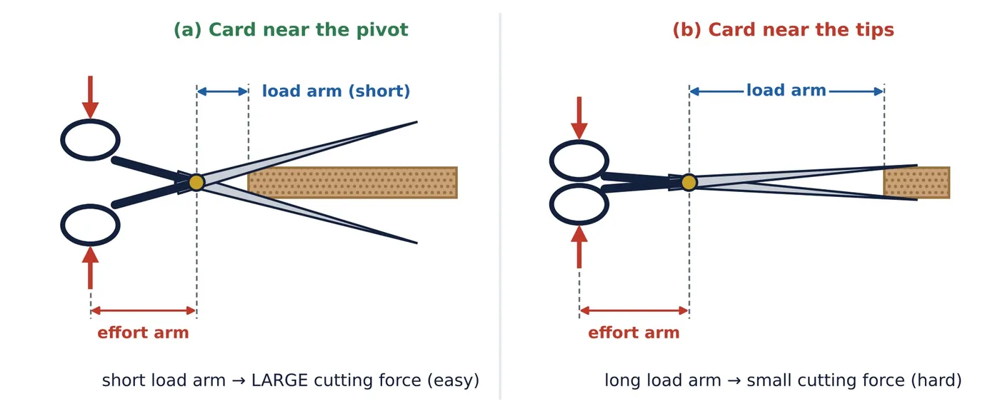
Ideal and real machines
6.1 Ideal machine vs real machine
- Ideal machine: no friction and weightless moving parts. Work output = work input, and the MA has its full theoretical value (1 for a fixed pulley, 2 for a movable pulley, L/h for a ramp).
- Real machine: part of the input work is used against friction and in lifting the machine’s own moving parts (such as the movable pulley). This part turns into heat and sound. So the useful work output is less than the work input, and the actual MA is less than the ideal MA.
6.2 Efficiency (for better understanding)
Example: a machine takes in 500 J of work and gives 350 J of useful work. Efficiency = (350 ÷ 500) × 100% = 70%. The remaining 150 J is lost, mostly as heat. No real machine has an efficiency of 100%.
6.3 Why can a perpetual motion machine never work?
Over the centuries many people have designed perpetual motion machines: wheels, weights or magnets meant to keep moving forever. None of them works. A machine cannot create energy; it can only transfer or transform it. In every real machine, friction and air resistance keep converting some mechanical energy into heat and sound. Unless energy is supplied again, the machine’s mechanical energy keeps decreasing, so it slows down and finally stops.
Textbook questions: model answers
Questions are paraphrased from the Pause and Ponder and Revise, Reflect, Refine sections of Chapter 7. Tap a question to see its answer.
1Why are roads on hills built to wind around in gentle slopes instead of going straight up?
2Why is it easier to climb an inclined ladder than a vertical ladder?
3Why is it easier to open the lid of a tin using a spoon?
4Why do we push a hard object closer to the hinge (fulcrum) of scissors to cut it?
5Many perpetual motion machines have been designed, but none works. Why do all real machines slow down and stop?
6Which factors decide the energy needed to raise a flag with a pulley? Does raising it slowly or quickly change the work done? How does the power change if the speed is doubled?
7An adult who weighs twice as much as a child balances a seesaw with the child. Draw a figure showing their distances from the fulcrum.
Chapter summary
8.1 Formula sheet
| Quantity | Formula | Remember |
|---|---|---|
| Mechanical advantage | MA = Load ÷ Effort = L ÷ E | No unit |
| Golden rule (ideal machine) | E × dE = L × dL | MA = dE ÷ dL |
| Single fixed pulley | MA = 1 | Changes the direction only |
| Single movable pulley | MA = 2 | Effort moves 2d |
| Pulley system (ideal) | MA = number of supporting segments | Block and tackle |
| Inclined plane | E × L = mg × h; MA = L ÷ h | L = sloping length |
| Lever (balanced) | E × effort arm = L × load arm | Arms measured from the fulcrum |
| MA of a lever | MA = effort arm ÷ load arm | Class II > 1, Class III < 1 |
| Efficiency | (Useful output ÷ input) × 100% | Always less than 100% |
8.2 Key points to remember
- Simple machines make tasks easier by changing the size or the direction of a force. The three in your textbook are the pulley, the inclined plane and the lever.
- MA = Load ÷ Effort. MA > 1 multiplies force; MA = 1 only changes direction; MA < 1 gains speed or distance.
- No machine reduces the total work (ideal case): it trades force for distance. Real machines need more input work because of friction.
- A single fixed pulley has MA = 1; we use it because pulling down is convenient.
- A single movable pulley has MA = 2; a pulley system has MA equal to the number of supporting rope segments.
- For an inclined plane, MA = L/h; a longer, gentler slope needs less effort.
- A lever is a rigid bar turning about a fulcrum. At balance, effort × effort arm = load × load arm, and MA = effort arm ÷ load arm.
- Class I: fulcrum in the middle (any MA). Class II: load in the middle (MA > 1). Class III: effort in the middle (MA < 1).
- A perpetual motion machine is impossible, because some energy is always lost to friction as heat and sound.
8.3 Common mistakes to avoid
⚠️ Don’t lose marks
- Writing MA = Effort ÷ Load. ✗ It is Load ÷ Effort.
- Saying “a machine reduces work”. ✗ It reduces the force (or changes its direction), not the work.
- Using the base of a ramp instead of its sloping length in MA = L/h.
- Measuring the arms from the end of the bar instead of from the fulcrum.
- Giving MA a unit. MA is a ratio: it has no unit.
- Deciding the class of a lever from its shape. Always find which of F, L and E is in the middle.
🛠️ Project: the journey beyond
Build your own simple machine using rulers, pencils, cardboard, thread, bottle caps (as pulleys) and paper cups. Lift a small load, measure the load and the effort (with a spring balance, or by counting coins) and calculate MA = Load ÷ Effort. Compare your design with your friends’ designs.
Test yourself
The practice MCQs from the notes. Tap an option to see the right answer and the reason.
1. The mechanical advantage of an ideal single fixed pulley is…
Effort = load; it only changes the direction of the force.
2. A ramp 6 m long rises through a height of 1.5 m. Its ideal mechanical advantage is…
MA = L/h = 6/1.5 = 4.
3. In which of these is the load between the fulcrum and the effort?
A nutcracker is a Class II lever.
4. The mechanical advantage of a Class III lever is always…
Its effort arm is always shorter than its load arm.
5. When an ideal simple machine is used, the total work done…
A machine trades force for distance; work in = work out.
6. A lever has an effort arm of 40 cm and a load arm of 10 cm. Its MA is…
MA = 40/10 = 4.
7. A single movable pulley raises a load through 0.5 m. The effort end moves through…
The effort moves 2 × 0.5 = 1 m.
8. Which of the following is NOT a Class I lever?
A bottle opener is a Class II lever.
Practice questions with answers
Tap a question to see its answer and hint.
B. Assertion and Reason (1 mark each)
(a) Both A and R are true, and R is the correct explanation of A. (b) Both A and R are true, but R is not the correct explanation of A. (c) A is true, but R is false. (d) A is false, but R is true.
1A: A fixed pulley is used to raise a flag even though its MA is 1. R: A fixed pulley changes the direction of the applied force.
2A: A Class II lever always has an MA greater than 1. R: In a Class II lever, the effort arm is always longer than the load arm.
3A: For the same height, a longer ramp needs a smaller effort. R: A longer ramp reduces the total work needed to raise the load.
4A: The efficiency of a real machine is always less than 100%. R: Part of the input work is converted into heat because of friction.
5A: Fire tongs have an MA greater than 1. R: In fire tongs, the effort is applied between the fulcrum and the load.
C. Short answer questions (2–3 marks)
1Define mechanical advantage. Why does it have no unit?
2Give three differences between a single fixed pulley and a single movable pulley.
3Why do we cut thick cardboard near the hinge of a pair of scissors?
4Class III levers have an MA less than 1. Why do we still use them? Give two examples.
5Why are roads on hills made winding instead of going straight up?
6Moving the fulcrum of a crowbar closer to the stone makes the stone easier to lift. Explain.
D. Numerical problems (3 marks each)
1An effort of 50 N lifts a load of 200 N using an ideal pulley system. Find the MA. How many rope segments support the movable block?
2A box weighing 1200 N is pushed up a ramp 4 m long to a height of 1 m. Find the MA and the effort needed (ignore friction).
3A child of mass 20 kg sits 1.5 m from the fulcrum of a seesaw. Where must a child of mass 30 kg sit to balance it?
4In a lever, a load of 800 N with a load arm of 25 cm is balanced by an effort of 200 N. Find the effort arm and the MA.
5A load of 500 N is raised by 2 m using a single movable pulley (ideal). Find (i) the effort, (ii) the distance moved by the effort, (iii) the work done by the effort.
6A machine needs 2400 J of work input to lift a 400 N load through 4.5 m. Find its efficiency.
E. Figure-based questions
1Name the class of each lever: (i) wheelbarrow (ii) fire tongs (iii) pliers (iv) bottle opener (v) fishing rod (vi) beam balance (vii) lemon squeezer (viii) seesaw.
2In Figure 4, the effort end of the rope is pulled up by 60 cm. How far does the load rise?
3In Figure 5(b), the load is 800 N. Find the ideal effort, and the distance moved by the effort when the load rises by 0.5 m.
4Draw a neat, labelled diagram of a Class II lever and mark its load arm and effort arm.
F. Case-based question (4 marks)
Read the passage
A shopkeeper has to load a gas cylinder weighing 600 N onto a platform 0.75 m high. Lifting it straight up is very hard, so he rests a 3 m long plank against the platform and pushes the cylinder up along the plank.